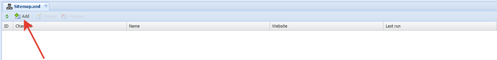

Go to section "Sitemap.xml"
Added new setting to sitemap.xml

Get on the first tab of the Preferences
In the field "Site" selects the site for which you want to create sitemap.xml file.
In the field "Name" can be any text, convenient you used in your list of files for different sites.
In the field "Path to file" specifies the path relative to the site root where the file will be saved.
To add a link to a file in robots.txt you can check the "Add a rule in the robots.txt after generate". If the link to the file already created and the new settings match it, the duplication will not happen, so this checkbox can be selected.
To alert the search engines about changes on the website you can tick the checkboxes "Notify Google about the change website", "Notify Yandex about the change of website", "Notify Bing about the change of website".
Go to the tab "Partitions"
Tab displays all the sections are linked to the site. You can customize the data what sections should go in indexing.
Column Section allows you to choose the need for the index partitions.
Column "Elements" - "Yes" tells the system that you want to index all elements that are included in this section.
After saving, we moved into the list, which shows that the settings are saved, but we never launched a generation files. Run by clicking "Start"
Generation is finished and we can see the generated files.

Open the file that contains the data

We see references to the indexing of specific pages, it worked fine.